|
しめくくりチャットⅠ・Ⅱの記録 |
|
||
|
しめくくりチャットⅠ・Ⅱの記録 |
|
||
|
２００９年１２月２８日（月） ２０：００～２２：００に、年末恒例の『しめくくりチャット』を開催しました。今回はサイト開設以来初めてとなる大晦日との２回分割開催で、１回目のしめくくりチャットⅠではたくさんの方にご参加いただきました。本当にありがとうございました。 前回好評だったなりきりチャットを含め、今回もいろんな話題で盛り上がりました。その模様を簡単に紹介いたします。 (2009/12/30) |
|||
|
(2010/1/4追加) |
||
↓開始数分でこんなにたくさんの参加者が！（ありがとうございます^^）
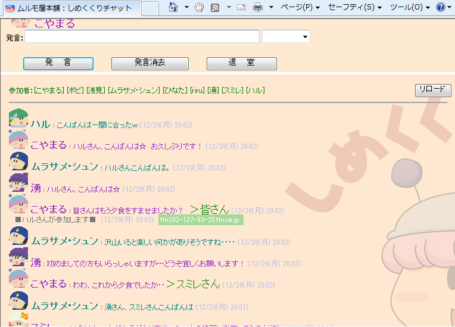
↓湧さんの質問「オリフェを考える秘訣とは？」に対して、皆さんからいろんな答えが出ました。
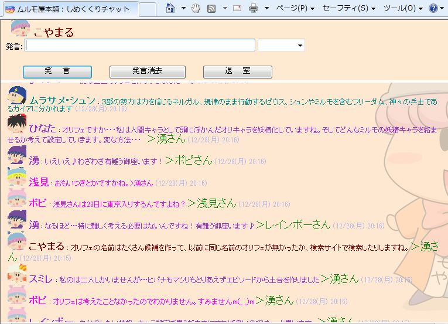
ここからなりきりチャットの時間です(^^)。
|
★なりきりチャット★ テーマ 洞窟の特徴 出演キャラ（五十音順） |
↓作戦を練りながら少しずつ洞窟を進んでいきます。
今回はポピさんのミルモがリーダーです。
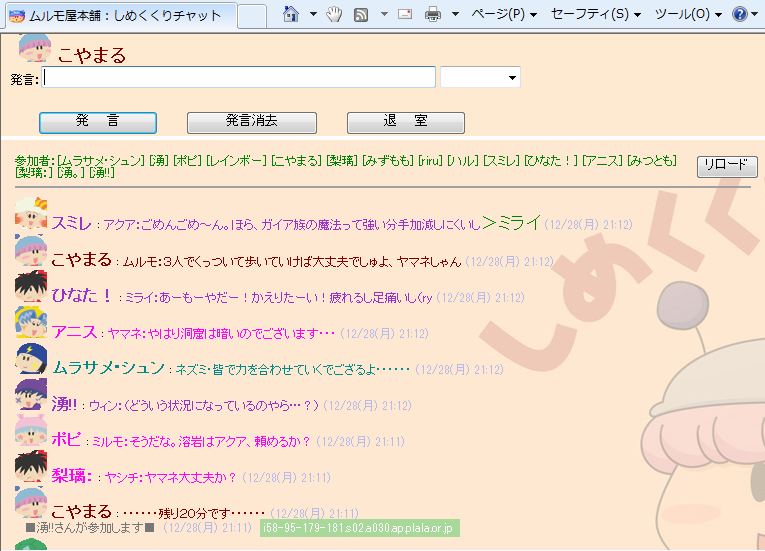
↓ミルモでポン！らしく妖精同士の絡みが・・・。
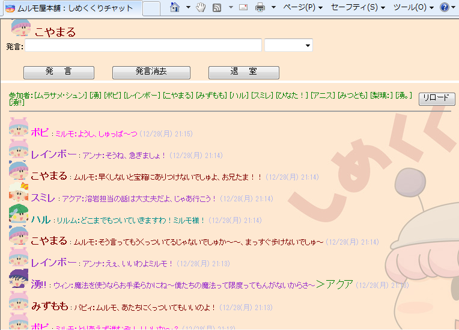
↓地底湖に到着！何やら危険な生き物がいるようです。
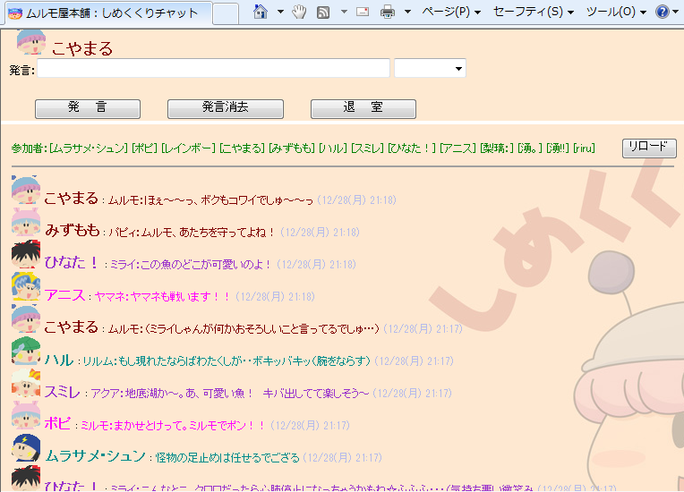
↓凶暴な魚をムルモがやっつけました(笑)
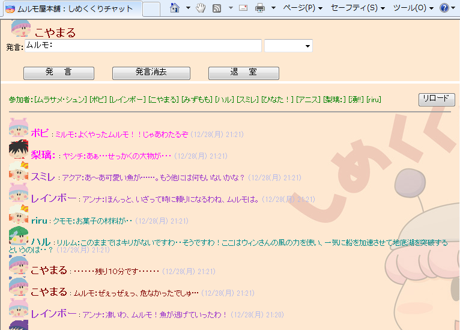
↓ウィンの風の力によって、無事(?)に地底湖を渡りました。
今回はスミレさんと湧さんのガイア族コンビがいい活躍を見せてくれましたね。
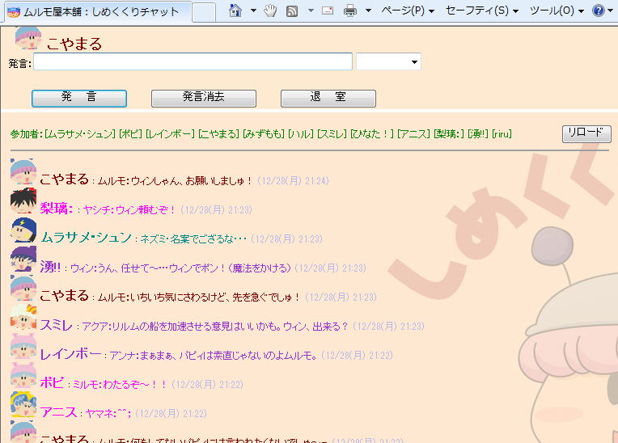
↓何とか溶岩の泉に到着・・・ここで時間切れ(T-T)

↓翌日のコミケに関する話題でも盛り上がりました。
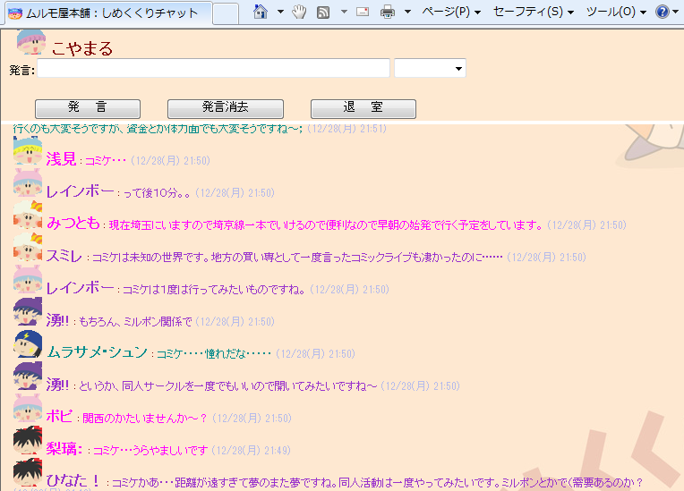
↓皆さんに来年の抱負を語っていただきました。
皆さん、ぜひ実現しましょうね！
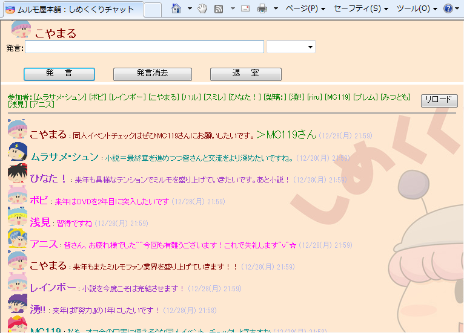
皆さん、来年もミルモとともによいお年をお迎えください！
ご都合よろしければ、大晦日のしめくくりチャットⅡもよろしくお願いしますね
～～～ ここから、しめくくりチャットⅡの模様です。 ～～～
↓年越しまであと数分…まずは大晦日の夕食の話題です。
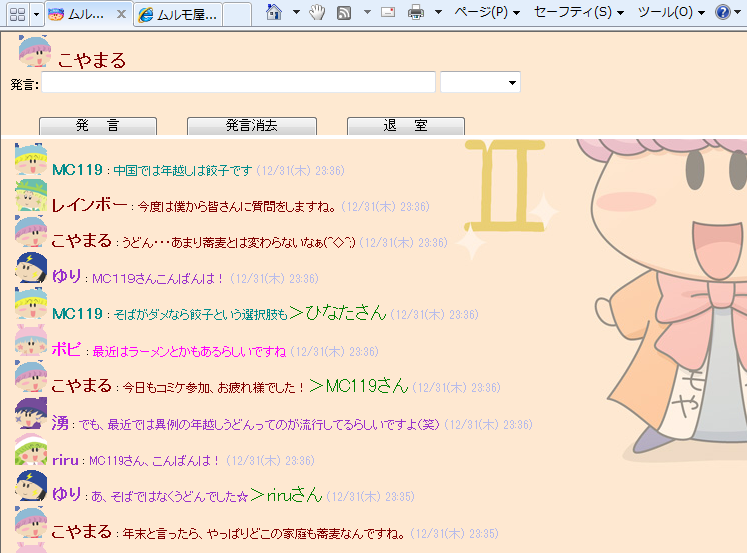
↓年越しは恒例のなりきり挨拶で(^^)。
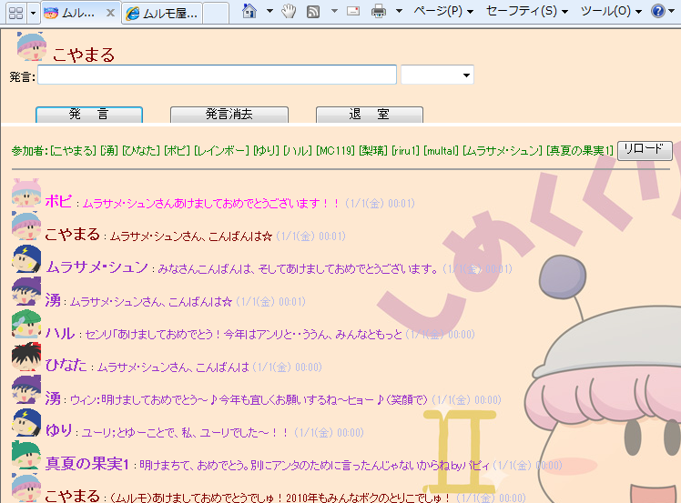
↓今年の目標をみんなで語り合いました。
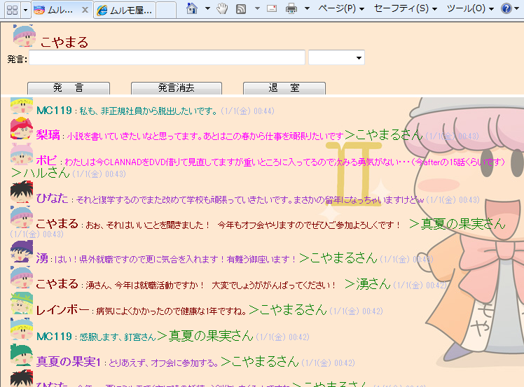
それでは２０１０年も皆さんとともに楽しい１年にしていきましょう♪
 |